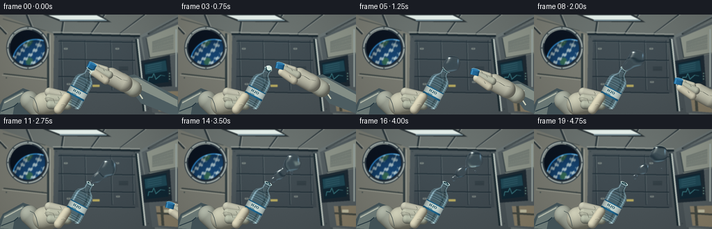
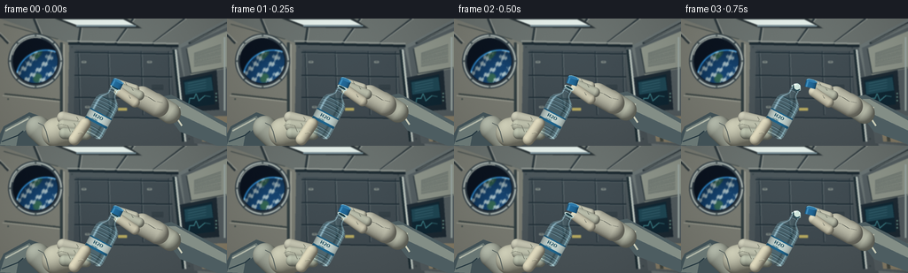

CODING AGENTS AS PIXEL WORLD MODELS
traex/GPT-6.1-Sol · mechanics_0005
点击播放 · 原生 RGB 像素
逐轮保存的候选
回放视频、检查图与代码变化。
每份候选均可单独播放。实际图片检查记录在下方工具轨迹中。
候选 01播放与检查图
点击播放 · 原生 RGB 像素

展开代码变化
--- 上一保存版本
+++ 本次保存版本
@@ -0,0 +1,466 @@
+"""Procedural, supersampled RGB rendering of water released in microgravity.
+No source images or external renderer are used.
+"""
+from pathlib import Path
+import json, math
+import numpy as np
+from PIL import Image, ImageDraw, ImageFilter, ImageFont
+import artifact_io
+
+ROOT = Path(__file__).resolve().parent
+SPEC = json.loads((ROOT / 'task_spec.json').read_text())
+W,H = SPEC['width'], SPEC['height']
+S = 3
+WW,HH = W*S,H*S
+rng = np.random.default_rng(8142)
+Y,X = np.mgrid[0:HH,0:WW].astype(np.float32)
+X=(X+.5)/S; Y=(Y+.5)/S
+NOISE=rng.normal(0,1,(HH,WW)).astype(np.float32)
+U=np.array([.47,-.88267],dtype=np.float32)
+V=np.array([.88267,.47],dtype=np.float32)
+B=np.array([101.,132.],dtype=np.float32)
+MOUTH=B+U*61
+
+def rgbim(a): return Image.fromarray(np.uint8(np.clip(a,0,255)))
+def xy(points): return [(round(x*S),round(y*S)) for x,y in points]
+def line(d,p,c,w=1): d.line(xy(p),fill=c,width=max(1,round(w*S)))
+def poly(d,p,c): d.polygon(xy(p),fill=c)
+def rect(d,b,c,r=0,outline=None,width=1):
+ bb=tuple(round(z*S) for z in b)
+ if r: d.rounded_rectangle(bb,round(r*S),fill=c,outline=outline,width=max(1,round(width*S)))
+ else: d.rectangle(bb,fill=c,outline=outline,width=max(1,round(width*S)))
+def ellipse(d,b,c,outline=None,width=1):
+ d.ellipse(tuple(round(z*S) for z in b),fill=c,outline=outline,width=max(1,round(width*S)))
+def smooth(a):
+ a=np.clip(a,0,1); return a*a*(3-2*a)
+
+def make_background():
+ # Modest perspective and practical illumination, with the interior in soft focus.
+ top=np.array([54,65,72]); bottom=np.array([106,111,109])
+ im=rgbim(top[None,None,:]*(1-Y[:,:,None]/H)+bottom[None,None,:]*(Y[:,:,None]/H))
+ d=ImageDraw.Draw(im)
+ poly(d,[(0,0),(256,0),(201,32),(78,28)],(101,107,104))
+ poly(d,[(0,0),(78,28),(77,144),(0,144)],(118,119,110))
+ poly(d,[(78,28),(200,31),(223,144),(76,144)],(71,80,84))
+ poly(d,[(200,31),(256,0),(256,144),(223,144)],(102,111,111))
+ # Ceiling lockers, rails, and long recessed lights.
+ for off in [-18,38,92,150,208,265]:
+ line(d,[(off,0),(78+(off-78)*.72,28)],(37,47,52),2.4)
+ line(d,[(off+2,0),(80+(off-78)*.72,27)],(157,161,154),.7)
+ poly(d,[(62,0),(143,0),(160,11),(87,10)],(38,45,48))
+ poly(d,[(70,1),(139,1),(151,7),(86,7)],(224,233,228))
+ line(d,[(86,8),(153,8)],(137,163,174),1.4)
+ line(d,[(77,28),(201,31)],(21,33,40),3)
+ line(d,[(76,25),(201,28)],(156,161,154),1.4)
+ # A dark equipment bay behind the hero water is a reflective visual backdrop.
+ poly(d,[(85,35),(191,37),(199,113),(83,111)],(60,70,76))
+ for xx in [88,122,159,190]:
+ line(d,[(xx,37),(xx+2,109)],(32,45,53),1)
+ line(d,[(xx+1,38),(xx+3,108)],(96,107,108),.55)
+ for yy in [38,64,89,111]:
+ line(d,[(84,yy),(194,yy+2)],(27,40,48),1.6)
+ line(d,[(85,yy+1),(194,yy+3)],(92,103,106),.55)
+ # Cabinet latches, warning markings, vents, restrained technical detail.
+ for cx,cy in [(92,48),(166,48),(96,99),(167,96)]:
+ rect(d,(cx,cy,cx+5,cy+2),(137,145,140),.5)
+ rect(d,(cx+1,cy+.6,cx+4,cy+1.1),(48,59,61),.15)
+ for j in range(8): line(d,[(171,75+j*.8),(184,75+j*.8)],(32,43,49),.45)
+ rect(d,(133,101,143,104),(179,165,92),.2)
+ # Port wall panel seams.
+ line(d,[(4,6),(65,23)],(71,78,76),1.5)
+ line(d,[(5,85),(69,92)],(56,65,64),2)
+ line(d,[(3,87),(68,94)],(166,168,155),1)
+ line(d,[(69,27),(69,131)],(45,57,60),3)
+ line(d,[(72,29),(72,136)],(164,167,156),1.1)
+ # Circular spacecraft window with deep metal reveal and the blue Earth.
+ cx,cy=40,48
+ ellipse(d,(cx-31,cy-31,cx+31,cy+31),(49,60,66))
+ ellipse(d,(cx-29.8,cy-29.8,cx+29.8,cy+29.8),(164,173,169))
+ ellipse(d,(cx-27.8,cy-27.8,cx+27.8,cy+27.8),(43,54,63))
+ ellipse(d,(cx-25.8,cy-25.8,cx+25.8,cy+25.8),(9,18,30))
+ arr=np.array(im).astype(np.float32)
+ window=(X-cx)**2+(Y-cy)**2<25.0**2
+ ex,ey,er=52,70,34.5
+ rr=np.sqrt((X-ex)**2+(Y-ey)**2)
+ disk=rr<er
+ nz=np.sqrt(np.maximum(0,1-(rr/er)**2))
+ earth=np.zeros_like(arr)
+ cloudfield=(np.sin(.34*X+.22*Y+2*np.sin(.1*Y))+
+ .6*np.sin(.67*Y-.38*X+2*np.cos(.08*X))+
+ .36*np.sin(1.48*X+.6*Y)+.2*np.sin(2.7*X-1.3*Y))
+ cloud=smooth((cloudfield-.05)/1.3)*.85
+ land=smooth((np.sin(.19*X+.3*np.sin(.15*Y))+.65*np.cos(.23*Y+.08*X)-.9)/.6)
+ ocean=np.stack([18+land*32,65+land*36,112-land*31],axis=-1)
+ earth=ocean*(1-cloud[:,:,None])+np.array([200,219,220])*cloud[:,:,None]
+ shade=.46+.54*nz
+ earth*=shade[:,:,None]
+ atmosphere=np.exp(-((rr-er+.35)/.75)**2)
+ earth+=atmosphere[:,:,None]*np.array([40,108,156])
+ arr[window & disk]=earth[window & disk]
+ arr[window & (~disk)]=np.array([6,13,25])
+ atm=window & (rr>er) & (rr<er+1.1)
+ arr[atm]=np.array([30,105,166])*(1-(rr[atm]-er)[:,None]/1.4)
+ # tiny distant stars, otherwise the window stays uncluttered
+ for sx,sy in [(26,31),(46,27),(23,48),(31,28)]:
+ st=window & (~disk) & ((X-sx)**2+(Y-sy)**2<.22**2)
+ arr[st]=[171,186,207]
+ im=rgbim(arr); d=ImageDraw.Draw(im)
+ for ang in np.arange(0,2*np.pi,np.pi/4):
+ sx=cx+28.8*np.cos(ang); sy=cy+28.8*np.sin(ang)
+ ellipse(d,(sx-.95,sy-.95,sx+.95,sy+.95),(47,61,66))
+ line(d,[(sx-.4,sy-.25),(sx+.4,sy+.25)],(187,191,174),.3)
+ d.arc(tuple(round(v*S) for v in (cx-27,cy-27,cx+27,cy+27)),195,283,fill=(218,221,205),width=2)
+ # Right rack, monitor, cargo bags and cables.
+ poly(d,[(204,33),(256,10),(256,144),(219,141)],(81,90,93))
+ poly(d,[(211,33),(256,14),(256,56),(215,64)],(139,145,134))
+ line(d,[(210,34),(215,62),(255,55)],(50,60,64),1.5)
+ for j in range(12):
+ line(d,[(219,39+j*1.35),(249,29+j*1.8)],(58,69,71),.65)
+ poly(d,[(201,67),(244,58),(247,103),(206,106)],(27,39,48))
+ poly(d,[(206,70),(239,63),(242,97),(210,101)],(14,36,48))
+ poly(d,[(208,72),(238,66),(240,81),(209,86)],(29,68,81))
+ for j in range(4): line(d,[(212,73+j*3),(232,69+j*3)],(74,118,132),.5)
+ line(d,[(213,96),(214,90),(219,90),(221,85),(224,93),(231,87),(237,88)],(89,184,188),.55)
+ for j in range(3): ellipse(d,(243,84+j*4,244.3,85.3+j*4),(116,164,151))
+ poly(d,[(224,111),(256,110),(256,141),(228,139)],(133,123,101))
+ line(d,[(232,111),(234,139)],(65,70,64),4)
+ line(d,[(225,121),(256,123)],(65,70,64),3)
+ rect(d,(236,116,245,120),(188,185,158),.3)
+ # Hand rails, tie-down rings, pipe highlights.
+ line(d,[(196,35),(207,139)],(24,39,45),4)
+ line(d,[(198,35),(209,139)],(169,180,177),2.3)
+ line(d,[(197.5,35),(208.5,139)],(226,230,215),.6)
+ line(d,[(253,21),(253,104)],(156,168,164),2)
+ for xx,yy in [(81,32),(193,33),(77,116),(213,136),(9,91),(61,91)]:
+ ellipse(d,(xx-.7,yy-.7,xx+.7,yy+.7),(30,43,48))
+ line(d,[(xx-.3,yy),(xx+.3,yy)],(142,153,144),.25)
+ im=im.filter(ImageFilter.GaussianBlur(.55*S))
+ a=np.array(im).astype(np.float32)
+ # Soft pools of practical light, restrained grain and photographic falloff.
+ light=np.exp(-((X-120)**2/145**2+(Y-15)**2/85**2))
+ a+=light[:,:,None]*np.array([7.,9.,9.])
+ vig=1-.13*((X-128)/175)**2-.10*((Y-67)/130)**2
+ a*=vig[:,:,None]
+ a+=NOISE[:,:,None]*.52
+ return np.clip(a,0,255)
+
+BACKGROUND=make_background()
+
+# Shaded mathematical capsule/ellipsoid primitives for the flight gloves.
+def capsule(a,p0,p1,r,color=(186,186,170),elliptical=1.,texture=1.):
+ p0=np.array(p0);p1=np.array(p1)
+ lo=np.floor((np.minimum(p0,p1)-r*1.1)*S).astype(int)
+ hi=np.ceil((np.maximum(p0,p1)+r*1.1)*S).astype(int)
+ x0=max(0,lo[0]);x1=min(WW,hi[0]);y0=max(0,lo[1]);y1=min(HH,hi[1])
+ if x0>=x1 or y0>=y1:return
+ xx=X[y0:y1,x0:x1]; yy=Y[y0:y1,x0:x1]
+ v=p1-p0; vv=float(v@v)
+ tt=np.clip(((xx-p0[0])*v[0]+(yy-p0[1])*v[1])/max(vv,.001),0,1)
+ dx=xx-(p0[0]+tt*v[0]);dy=yy-(p0[1]+tt*v[1])
+ dist=np.sqrt(dx*dx+dy*dy)
+ nz=np.sqrt(np.maximum(0,1-(dist/r)**2))
+ nx=dx/r;ny=dy/r
+ illum=np.maximum(0,-.43*nx-.55*ny+.715*nz)
+ shade=.44+.55*illum+.11*nz
+ # woven cloth, not a polished plastic material
+ grain=NOISE[y0:y1,x0:x1]*.8+np.sin(xx*13+yy*6)*.4
+ out=np.array(color)[None,None,:]*shade[:,:,None]+grain[:,:,None]*texture
+ edge=np.clip((r-dist)*S+.5,0,1)
+ old=a[y0:y1,x0:x1]
+ old[:]=old*(1-edge[:,:,None])+out*edge[:,:,None]
+
+def glove_seams(a,shift=(0,0),right=False):
+ im=rgbim(a);d=ImageDraw.Draw(im)
+ def pp(pts):return [(x+shift[0],y+shift[1]) for x,y in pts]
+ if right:
+ line(d,pp([(162,87),(166,88),(174,93),(183,95)]),(94,98,90),.65)
+ line(d,pp([(166,88),(170,89),(177,94)]),(208,207,187),.45)
+ for x,y in [(142,74),(149,80),(146,89)]:
+ line(d,pp([(x-1,y-2),(x,y),(x+1,y+1)]),(109,114,103),.65)
+ else:
+ line(d,[(43,118),(49,121),(52,128),(55,140)],(79,90,88),.9)
+ line(d,[(64,121),(69,119),(76,121),(79,128)],(111,114,101),.7)
+ for xx,yy in [(87,114),(84,121),(82,130)]:
+ line(d,[(xx-1,yy-3),(xx+1,yy),(xx,yy+2)],(125,130,114),.6)
+ return np.array(im).astype(np.float32)
+
+def left_hand(a):
+ # Suit cuff and palm behind the bottle.
+ im=rgbim(a);d=ImageDraw.Draw(im)
+ poly(d,[(-8,147),(4,122),(33,106),(50,112),(65,145)],(65,81,86))
+ poly(d,[(0,143),(6,124),(33,110),(39,118),(20,133),(18,144)],(105,119,116))
+ line(d,[(6,127),(32,113)],(177,183,168),1.6)
+ line(d,[(2,139),(20,132),(26,127)],(34,53,62),1.4)
+ a=np.array(im).astype(np.float32)
+ capsule(a,(43,124),(58,138),14,(164,170,156))
+ capsule(a,(64,129),(81,125),17,(191,191,170))
+ capsule(a,(71,112),(95,118),6.8,(194,194,175))
+ capsule(a,(72,121),(98,124),6.9,(186,189,169))
+ capsule(a,(73,130),(97,131),6.5,(178,184,165))
+ return glove_seams(a)
+
+def right_hand(a,t):
+ lift=5*smooth(t/.7)
+ drift=max(0,t-.5)
+ shift=np.array([lift*.47+drift*49, -lift*.883+drift*18])
+ # Retreat is diagonally toward the astronaut, not toward the emerging liquid.
+ im=rgbim(a);d=ImageDraw.Draw(im)
+ sh=lambda p:[(x+shift[0],y+shift[1]) for x,y in p]
+ poly(d,sh([(174,90),(193,86),(257,119),(264,151),(203,128)]),(77,93,97))
+ poly(d,sh([(190,91),(198,91),(255,123),(255,133),(204,109)]),(131,142,134))
+ line(d,sh([(202,100),(199,112),(205,121)]),(203,205,184),2)
+ a=np.array(im).astype(np.float32)
+ capsule(a,sh([(175,96)])[0],sh([(192,107)])[0],12,(185,189,171))
+ capsule(a,sh([(160,89)])[0],sh([(178,99)])[0],12.5,(195,195,176))
+ capsule(a,sh([(152,80)])[0],sh([(133,74)])[0],5.2,(202,202,182))
+ capsule(a,sh([(157,87)])[0],sh([(138,79)])[0],5.7,(188,192,173))
+ capsule(a,sh([(152,95)])[0],sh([(135,83)])[0],5.7,(211,207,183))
+ a=glove_seams(a,shift,True)
+ return a,shift
+
+
+def bottle(a,t):
+ s=(X-B[0])*U[0]+(Y-B[1])*U[1]
+ q=(X-B[0])*V[0]+(Y-B[1])*V[1]
+ radius=np.interp(s,[0,2,5,37,42,46,51,53,61],[10,13,14,14.2,13.8,11.8,6.1,5.0,5.0])
+ mask=(s>=0)&(s<=61)&(np.abs(q)<=radius)
+ nz=np.sqrt(np.maximum(0,1-(q/radius)**2))
+ nx=q/radius*V[0];ny=q/radius*V[1]
+ # Cylindrical refraction: the scene can be seen through both clear PET and water.
+ sx=np.clip(((X-q*.28*V[0]+nz*1.3)*S).astype(int),0,WW-1)
+ sy=np.clip(((Y-q*.28*V[1]-nz*.8)*S).astype(int),0,HH-1)
+ refr=a[sy,sx].copy()
+ edge=(1-nz)**2
+ bodywater=(s<46-1.4*max(0,t-1))&(s>3)&(np.abs(q)<radius-1.3)
+ tint=np.array([109,168,184])
+ out=refr*.82+tint*.18
+ out=np.where(bodywater[:,:,None],out*.88+np.array([91,155,178])*.12,out)
+ out=out*(1-.40*edge[:,:,None])+np.array([158,196,205])*.40*edge[:,:,None]
+ out+=np.exp(-((q/radius+.72)/.085)**2)[:,:,None]*np.array([65,76,80])
+ out+=np.exp(-((q/radius-.82)/.065)**2)[:,:,None]*np.array([48,59,60])
+ out-=np.exp(-((q/radius-.48)/.09)**2)[:,:,None]*np.array([20,22,24])
+ # Moulded circumferential ridges with elliptical projection.
+ for r in [5,8,32,35,39,43,54.5,57,59.5]:
+ ring=s-r-1.7*nz
+ hi=np.exp(-(ring/.32)**2)
+ shadow=np.exp(-((ring-.60)/.38)**2)
+ out+=hi[:,:,None]*np.array([49,60,64])*(.30+.7*nz[:,:,None])
+ out-=shadow[:,:,None]*np.array([30,33,35])
+ # Blue-and-white identifying label, wrapping across the front of the bottle.
+ label=(s>15)&(s<28)&(np.abs(q)<radius-.45)
+ lshade=.58+.40*nz
+ lab=np.array([200,216,211])[None,None,:]*lshade[:,:,None]
+ band=(s<17.7)|(s>26.5)
+ lab=np.where(band[:,:,None],np.array([31,103,144])*lshade[:,:,None],lab)
+ out=np.where(label[:,:,None],lab,out)
+ # PET foot and shoulder: clear bright edges with a dark inner silhouette.
+ out+=np.exp(-((s-1.5-1.4*nz)/.60)**2)[:,:,None]*np.array([72,78,74])
+ aa=np.clip((radius-np.abs(q))*S+.5,0,1)*np.clip(s*S+.5,0,1)*np.clip((61-s)*S+.5,0,1)
+ a=a*(1-aa[:,:,None])+np.clip(out,0,255)*aa[:,:,None]
+ im=rgbim(a);d=ImageDraw.Draw(im)
+ # Legible understated bottle lettering, in its own local label plane.
+ label_im=Image.new('RGBA',(28*S,13*S),(0,0,0,0));ld=ImageDraw.Draw(label_im)
+ try:
+ font=ImageFont.truetype('DejaVuSans-Bold.ttf',5*S)
+ small=ImageFont.truetype('DejaVuSans.ttf',2*S)
+ except OSError:
+ font=small=ImageFont.load_default()
+ ld.text((7*S,2*S),'H2O',font=font,fill=(22,69,87,255))
+ ld.text((7.1*S,8*S),'WATER',font=small,fill=(33,84,99,255))
+ # label plane horizontal is V, and the vertical is -U
+ label_im=label_im.rotate(-math.degrees(math.atan2(V[1],V[0])),resample=Image.Resampling.BICUBIC,expand=True)
+ pos=B+U*21.5
+ im.paste(label_im,(round(pos[0]*S-label_im.width/2),round(pos[1]*S-label_im.height/2)),label_im)
+ # Hollow open mouth: two concentric tilted ellipses along the bottle's axis.
+ def mouth_ring(qr,sr,color,center_offset=0):
+ p=[]
+ for ang in np.linspace(0,2*np.pi,70):
+ pt=MOUTH+V*(qr*np.cos(ang))+U*(sr*np.sin(ang)+center_offset)
+ p.append(tuple(pt))
+ poly(d,p,color)
+ mouth_ring(5.6,1.9,(177,208,209))
+ mouth_ring(4.3,1.2,(28,61,70),.15)
+ # the far lip shines under the station's strip lights
+ p=[MOUTH+V*(5.0*np.cos(ang))+U*(1.5*np.sin(ang)) for ang in np.linspace(0,np.pi,30)]
+ line(d,p,(220,234,225),.65)
+ return np.array(im).astype(np.float32)
+
+def left_thumb(a):
+ capsule(a,(84,137),(96,119),6.5,(210,205,179))
+ im=rgbim(a);d=ImageDraw.Draw(im)
+ line(d,[(88,130),(91,129),(94,130)],(134,137,116),.65)
+ line(d,[(89,129),(91,128),(94,129)],(222,215,190),.4)
+ return np.array(im).astype(np.float32)
+
+def cap(a,t,shift):
+ c=MOUTH+U*4.5+shift
+ angle=-.24*smooth(t/.8)
+ u=np.array([U[0]*np.cos(angle)-U[1]*np.sin(angle),U[0]*np.sin(angle)+U[1]*np.cos(angle)])
+ v=np.array([-u[1],u[0]])
+ s=(X-c[0])*u[0]+(Y-c[1])*u[1]
+ q=(X-c[0])*v[0]+(Y-c[1])*v[1]
+ r=6.25
+ nz=np.sqrt(np.maximum(0,1-(q/r)**2))
+ edge=np.clip((r-np.abs(q))*S+.5,0,1)*np.clip((4.2-np.abs(s))*S+.5,0,1)
+ illum=.43+.53*nz+.20*np.maximum(0,-q/r)
+ grooves=.92+.08*np.cos(q*5.2+12*t)
+ col=np.array([36,115,168])*illum[:,:,None]*grooves[:,:,None]
+ col+=np.exp(-((q/r+.65)/.14)**2)[:,:,None]*np.array([37,49,49])
+ col+=np.exp(-((s-3.4)/.45)**2)[:,:,None]*np.array([22,38,45])
+ a=a*(1-edge[:,:,None])+col*edge[:,:,None]
+ im=rgbim(a);d=ImageDraw.Draw(im)
+ pt=[]
+ for ang in np.linspace(0,2*np.pi,50):pt.append(c+u*(4+1.5*np.sin(ang))+v*(6*np.cos(ang)))
+ poly(d,pt,(46,122,171))
+ p=[c+u*(4+1.5*np.sin(ang))+v*(5.4*np.cos(ang)) for ang in np.linspace(0,np.pi,24)]
+ line(d,p,(127,185,204),.55)
+ return np.array(im).astype(np.float32)
+
+
+def liquid_parts(t):
+ # Gaussian metaballs: one continuously released parcel elongates, pinches off,
+ # then coasts without gravity; later smaller parcels follow at different speeds.
+ balls=[]
+ add=lambda x,y,r:balls.append((float(x),float(y),float(r)/.685))
+ age=t-.63
+ if age<=0:return balls
+ k=smooth(age/.75)
+ center=MOUTH+np.array([12.0,-10.0])*age
+ rad=2.6+5.0*k
+ phase=age*1.4
+ add(*center,rad)
+ add(center[0]+(5.4+1.2*np.sin(phase))*k,center[1]-5*k,rad*.66)
+ add(center[0]-4.8*k,center[1]+4.0*k,rad*.71)
+ add(center[0]+5.4*k,center[1]+2.8*k,rad*.55)
+ add(center[0]-1.0*k,center[1]-7.8*k,rad*.47)
+ # Short liquid ligament at the open neck while the first mass is being expelled.
+ if age<1.60:
+ fade=1-smooth((age-1.10)/.5)
+ length=np.linalg.norm(center-MOUTH)
+ n=max(2,int(length/2.0))
+ for j in range(n):
+ f=j/max(1,n-1)
+ p=MOUTH*(1-f)+center*f
+ r=(1.7+.65*np.sin(f*np.pi))*fade+.4
+ add(p[0]+.45*np.sin(f*5+age),p[1],r)
+ age2=t-1.50
+ if age2>0:
+ kk=smooth(age2/.70)
+ c=MOUTH+np.array([8.7,-6.3])*age2
+ rr=1.5+3.8*kk
+ add(*c,rr)
+ add(c[0]-3.3*kk,c[1]+2.5*kk,rr*.68)
+ add(c[0]+2.6*kk,c[1]-3.2*kk,rr*.62)
+ age3=t-2.5
+ if age3>0:
+ kk=smooth(age3/.55)
+ c=MOUTH+np.array([6.7,-3.8])*age3
+ rr=1.1+2.0*kk
+ add(*c,rr)
+ add(c[0]+1.9*kk,c[1]-1.7*kk,rr*.57)
+ # A small water bead remains attached to the lip, but it is not an endless jet.
+ add(MOUTH[0]+.5,MOUTH[1]-.55,1.15+.35*np.sin(t*2))
+ # Tiny satellites detach and continue on ballistic paths in microgravity.
+ if age>1.15:
+ b=age-1.15;kk=smooth(b/.35)
+ add(MOUTH[0]+14+14*b,MOUTH[1]-15-11*b,1.6*kk)
+ if age>1.8:
+ b=age-1.8;kk=smooth(b/.4)
+ add(MOUTH[0]+17+16*b,MOUTH[1]-9-5.0*b,1.45*kk)
+ if age>2.30:
+ b=age-2.3;kk=smooth(b/.3)
+ add(MOUTH[0]+20+11*b,MOUTH[1]-26-10*b,1.1*kk)
+ return [b for b in balls if b[2]>.08]
+
+def water(a,t):
+ balls=liquid_parts(t)
+ if not balls:return a
+ # All centers share a plane; each isosurface is genuine three dimensional.
+ # This makes the visible z root monotonic, allowing efficient bisection.
+ x0=max(0,int((min(p[0]-p[2]*1.4 for p in balls))*S))
+ x1=min(WW,int((max(p[0]+p[2]*1.4 for p in balls))*S)+1)
+ y0=max(0,int((min(p[1]-p[2]*1.4 for p in balls))*S))
+ y1=min(HH,int((max(p[1]+p[2]*1.4 for p in balls))*S)+1)
+ xx=X[y0:y1,x0:x1];yy=Y[y0:y1,x0:x1]
+ ba=np.array(balls,dtype=np.float32)
+ cx=ba[:,0,None,None];cy=ba[:,1,None,None];r=ba[:,2,None,None]
+ rr=r*r
+ xygauss=np.exp(-((xx[None]-cx)**2+(yy[None]-cy)**2)/rr)
+ f0=np.sum(xygauss,axis=0)
+ iso=.625
+ mask=f0>iso
+ if not np.any(mask):return a
+ # Work only on pixels inside the surface projection.
+ gauss=xygauss[:,mask]
+ radii2=rr[:,0,0][:,None]
+ zl=np.zeros(np.count_nonzero(mask),dtype=np.float32)
+ zh=np.full_like(zl,max(ba[:,2])*2)
+ for _ in range(13):
+ zm=(zl+zh)*.5
+ val=np.sum(gauss*np.exp(-zm[None,:]**2/radii2),axis=0)
+ inside=val>iso
+ zl=np.where(inside,zm,zl);zh=np.where(inside,zh,zm)
+ zz=(zl+zh)*.5
+ weights=gauss*np.exp(-zz[None,:]**2/radii2)/radii2
+ xs=xx[mask];ys=yy[mask]
+ gx=np.sum(weights*(xs[None]-ba[:,0,None]),axis=0)
+ gy=np.sum(weights*(ys[None]-ba[:,1,None]),axis=0)
+ gz=np.sum(weights*zz[None],axis=0)
+ inv=1/np.sqrt(gx*gx+gy*gy+gz*gz+1e-10)
+ nx=gx*inv;ny=gy*inv;nz=gz*inv
+ # Two air/water interfaces create a distorted magnifying lens of the cabin.
+ displacement=(1.6+zz*.85)
+ sx=np.clip(np.round((xs-nx*displacement)*S).astype(int),0,WW-1)
+ sy=np.clip(np.round((ys-ny*displacement)*S).astype(int),0,HH-1)
+ trans=a[sy,sx].copy()
+ # Very weak blue absorption, since this is clear drinking water, not gel.
+ absorb=np.exp(-zz*.008)
+ trans[:,0]*=absorb
+ trans[:,1]*=(.98+.02*absorb)
+ trans[:,2]=trans[:,2]*.98+3
+ # Reflection is sampled from an analytical cabin environment.
+ rx=2*nz*nx;ry=2*nz*ny;rz=2*nz*nz-1
+ envx=np.clip(((128+rx*123)*S).astype(int),0,WW-1)
+ envy=np.clip(((72+ry*85)*S).astype(int),0,HH-1)
+ reflected=BACKGROUND[envy,envx]*.95
+ fres=.025+.975*(1-nz)**5
+ out=trans*(1-fres[:,None]*.72)+reflected*fres[:,None]*.72
+ # Rectangular overhead softbox reflected as a curved white ribbon.
+ strip=np.exp(-((nx+.39)**2/.043+(ny+.61)**2/.006))
+ strip2=np.exp(-((nx-.63)**2/.010+(ny+.26)**2/.060))
+ point=np.maximum(0,nx*(-.40)+ny*(-.52)+nz*.754)**65
+ out+=strip[:,None]*np.array([154,158,151])+strip2[:,None]*np.array([42,62,76])
+ out+=point[:,None]*np.array([95,91,82])
+ # Grazing bright edges and a faint dark boundary give each transparent blob depth.
+ rim=(1-nz)**7
+ lit=np.clip(-ny*.65-nx*.35+.4,0,1)
+ out+=rim[:,None]*lit[:,None]*np.array([45,61,68])
+ out-=((1-nz)**3*(1-lit))[:,None]*np.array([13,17,19])
+ # Subtle concentrated transmission caustic on the lower-facing surface.
+ caustic=np.exp(-((nx-.12)**2/.17+(ny-.74)**2/.014))
+ out+=caustic[:,None]*np.array([24,36,41])
+ patch=a[y0:y1,x0:x1]
+ patch[mask]=np.clip(out,0,255)
+ return a
+
+
+def generate():
+ frames=[]
+ for i in range(SPEC['frames']):
+ t=i/SPEC['fps']
+ a=BACKGROUND.copy()
+ a=left_hand(a)
+ a,shift=right_hand(a,t)
+ a=bottle(a,t)
+ a=left_thumb(a)
+ a=cap(a,t,shift)
+ a=water(a,t)
+ # Final optical supersampling, an RGB frame and no temporal cross-fade.
+ im=rgbim(a).resize((W,H),Image.Resampling.LANCZOS)
+ frames.append(np.asarray(im,dtype=np.uint8))
+ print(f'frame {i+1:02d}/{SPEC["frames"]}',flush=True)
+ frames=np.stack(frames)
+ artifact_io.save(frames,ROOT)
+ print('Saved',frames.shape,frames.dtype,flush=True)
+
+if __name__=='__main__':generate()
候选 02播放与检查图
点击播放 · 原生 RGB 像素


展开代码变化
--- 上一保存版本
+++ 本次保存版本
@@ -461,6 +461,19 @@
print(f'frame {i+1:02d}/{SPEC["frames"]}',flush=True)
frames=np.stack(frames)
artifact_io.save(frames,ROOT)
+ # A conventional playback copy; the authoritative RGB pixels stay lossless.
+ try:
+ import av
+ with av.open(str(ROOT/'video.mp4'), 'w') as container:
+ stream=container.add_stream('libx264',rate=4)
+ stream.width=W;stream.height=H;stream.pix_fmt='yuv420p'
+ stream.options={'crf':'17','preset':'medium'}
+ for frame in frames:
+ for packet in stream.encode(av.VideoFrame.from_ndarray(frame,format='rgb24')):
+ container.mux(packet)
+ for packet in stream.encode():container.mux(packet)
+ except ImportError:
+ pass
print('Saved',frames.shape,frames.dtype,flush=True)
if __name__=='__main__':generate()
可观测工具轨迹
实际执行的命令与返回图片。
命令 1exit 0
/bin/bash -lc "ls -la && cat prompt.txt && printf '\\n---RULES---\\n' && cat GENERATION_RULES.md && printf '\\n---SPEC---\\n' && cat task_spec.json"
命令 2exit 0
/bin/bash -lc "cat artifact_io.py && cat player_template.html | head -30 && python - <<'PY'
import numpy,PIL
print('numpy',numpy.__version__)
PY"命令 3exit 0
/bin/bash -lc "cat > generate.py <<'PY'
\"\"\"Procedural, supersampled RGB rendering of water released in microgravity.
No source images or external renderer are used.
\"\"\"
from pathlib import Path
import json, math
import numpy as np
from PIL import Image, ImageDraw, ImageFilter, ImageFont
import artifact_io
ROOT = Path(__file__).resolve().parent
SPEC = json.loads((ROOT / 'task_spec.json').read_text())
W,H = SPEC['width'], SPEC['height']
S = 3
WW,HH = W*S,H*S
rng = np.random.default_rng(8142)
Y,X = np.mgrid[0:HH,0:WW].astype(np.float32)
X=(X+.5)/S; Y=(Y+.5)/S
NOISE=rng.normal(0,1,(HH,WW)).astype(np.float32)
U=np.array([.47,-.88267],dtype=np.float32)
V=np.array([.88267,.47],dtype=np.float32)
B=np.array([101.,132.],dtype=np.float32)
MOUTH=B+U*61
def rgbim(a): return Image.fromarray(np.uint8(np.clip(a,0,255)))
def xy(points): return [(round(x*S),round(y*S)) for x,y in points]
def line(d,p,c,w=1): d.line(xy(p),fill=c,width=max(1,round(w*S)))
def poly(d,p,c): d.polygon(xy(p),fill=c)
def rect(d,b,c,r=0,outline=None,width=1):
bb=tuple(round(z*S) for z in b)
if r: d.rounded_rectangle(bb,round(r*S),fill=c,outline=outline,width=max(1,round(width*S)))
else: d.rectangle(bb,fill=c,outline=outline,width=max(1,round(width*S)))
def ellipse(d,b,c,outline=None,width=1):
d.ellipse(tuple(round(z*S) for z in b),fill=c,outline=outline,width=max(1,round(width*S)))
def smooth(a):
a=np.clip(a,0,1); return a*a*(3-2*a)
def make_background():
# Modest perspective and practical illumination, with the interior in soft focus.
top=np.array([54,65,72]); bottom=np.array([106,111,109])
im=rgbim(top[None,None,:]*(1-Y[:,:,None]/H)+bottom[None,None,:]*(Y[:,:,None]/H))
d=ImageDraw.Draw(im)
poly(d,[(0,0),(256,0),(201,32),(78,28)],(101,107,104))
poly(d,[(0,0),(78,28),(77,144),(0,144)],(118,119,110))
poly(d,[(78,28),(200,31),(223,144),(76,144)],(71,80,84))
poly(d,[(200,31),(256,0),(256,144),(223,144)],(102,111,111))
# Ceiling lockers, rails, and long recessed lights.
for off in [-18,38,92,150,208,265]:
line(d,[(off,0),(78+(off-78)*.72,28)],(37,47,52),2.4)
line(d,[(off+2,0),(80+(off-78)*.72,27)],(157,161,154),.7)
poly(d,[(62,0),(143,0),(160,11),(87,10)],(38,45,48))
poly(d,[(70,1),(139,1),(151,7),(86,7)],(224,233,228))
line(d,[(86,8),(153,8)],(137,163,174),1.4)
line(d,[(77,28),(201,31)],(21,33,40),3)
line(d,[(76,25),(201,28)],(156,161,154),1.4)
# A dark equipment bay behind the hero water is a reflective visual backdrop.
poly(d,[(85,35),(191,37),(199,113),(83,111)],(60,70,76))
for xx in [88,122,159,190]:
line(d,[(xx,37),(xx+2,109)],(32,45,53),1)
line(d,[(xx+1,38),(xx+3,108)],(96,107,108),.55)
for yy in [38,64,89,111]:
line(d,[(84,yy),(194,yy+2)],(27,40,48),1.6)
line(d,[(85,yy+1),(194,yy+3)],(92,103,106),.55)
# Cabinet latches, warning markings, vents, restrained technical detail.
for cx,cy in [(92,48),(166,48),(96,99),(167,96)]:
rect(d,(cx,cy,cx+5,cy+2),(137,145,140),.5)
rect(d,(cx+1,cy+.6,cx+4,cy+1.1),(48,59,61),.15)
for j in range(8): line(d,[(171,75+j*.8),(184,75+j*.8)],(32,43,49),.45)
rect(d,(133,101,143,104),(179,165,92),.2)
# Port wall panel seams.
line(d,[(4,6),(65,23)],(71,78,76),1.5)
line(d,[(5,85),(69,92)],(56,65,64),2)
line(d,[(3,87),(68,94)],(166,168,155),1)
line(d,[(69,27),(69,131)],(45,57,60),3)
line(d,[(72,29),(72,136)],(164,167,156),1.1)
# Circular spacecraft window with deep metal reveal and the blue Earth.
cx,cy=40,48
ellipse(d,(cx-31,cy-31,cx+31,cy+31),(49,60,66))
ellipse(d,(cx-29.8,cy-29.8,cx+29.8,cy+29.8),(164,173,169))
ellipse(d,(cx-27.8,cy-27.8,cx+27.8,cy+27.8),(43,54,63))
ellipse(d,(cx-25.8,cy-25.8,cx+25.8,cy+25.8),(9,18,30))
arr=np.array(im).astype(np.float32)
window=(X-cx)**2+(Y-cy)**2<25.0**2
ex,ey,er=52,70,34.5
rr=np.sqrt((X-ex)**2+(Y-ey)**2)
disk=rr<er
nz=np.sqrt(np.maximum(0,1-(rr/er)**2))
earth=np.zeros_like(arr)
cloudfield=(np.sin(.34*X+.22*Y+2*np.sin(.1*Y))+
.6*np.sin(.67*Y-.38*X+2*np.cos(.08*X))+
.36*np.sin(1.48*X+.6*Y)+.2*np.sin(2.7*X-1.3*Y))
cloud=smooth((cloudfield-.05)/1.3)*.85
land=smooth((np.sin(.19*X+.3*np.sin(.15*Y))+.65*np.cos(.23*Y+.08*X)-.9)/.6)
ocean=np.stack([18+land*32,65+land*36,112-land*31],axis=-1)
earth=ocean*(1-cloud[:,:,None])+np.array([200,219,220])*cloud[:,:,None]
shade=.46+.54*nz
earth*=shade[:,:,None]
atmosphere=np.exp(-((rr-er+.35)/.75)**2)
earth+=atmosphere[:,:,None]*np.array([40,108,156])
arr[window & disk]=earth[window & disk]
arr[window & (~disk)]=np.array([6,13,25])
atm=window & (rr>er) & (rr<er+1.1)
arr[atm]=np.array([30,105,166])*(1-(rr[atm]-er)[:,None]/1.4)
# tiny distant stars, otherwise the window stays uncluttered
for sx,sy in [(26,31),(46,27),(23,48),(31,28)]:
st=window & (~disk) & ((X-sx)**2+(Y-sy)**2<.22**2)
arr[st]=[171,186,207]
im=rgbim(arr); d=ImageDraw.Draw(im)
for ang in np.arange(0,2*np.pi,np.pi/4):
sx=cx+28.8*np.cos(ang); sy=cy+28.8*np.sin(ang)
ellipse(d,(sx-.95,sy-.95,sx+.95,sy+.95),(47,61,66))
line(d,[(sx-.4,sy-.25),(sx+.4,sy+.25)],(187,191,174),.3)
d.arc(tuple(round(v*S) for v in (cx-27,cy-27,cx+27,cy+27)),195,283,fill=(218,221,205),width=2)
# Right rack, monitor, cargo bags and cables.
poly(d,[(204,33),(256,10),(256,144),(219,141)],(81,90,93))
poly(d,[(211,33),(256,14),(256,56),(215,64)],(139,145,134))
line(d,[(210,34),(215,62),(255,55)],(50,60,64),1.5)
for j in range(12):
line(d,[(219,39+j*1.35),(249,29+j*1.8)],(58,69,71),.65)
poly(d,[(201,67),(244,58),(247,103),(206,106)],(27,39,48))
poly(d,[(206,70),(239,63),(242,97),(210,101)],(14,36,48))
poly(d,[(208,72),(238,66),(240,81),(209,86)],(29,68,81))
for j in range(4): line(d,[(212,73+j*3),(232,69+j*3)],(74,118,132),.5)
line(d,[(213,96),(214,90),(219,90),(221,85),(224,93),(231,87),(237,88)],(89,184,188),.55)
for j in range(3): ellipse(d,(243,84+j*4,244.3,85.3+j*4),(116,164,151))
poly(d,[(224,111),(256,110),(256,141),(228,139)],(133,123,101))
line(d,[(232,111),(234,139)],(65,70,64),4)
line(d,[(225,121),(256,123)],(65,70,64),3)
rect(d,(236,116,245,120),(188,185,158),.3)
# Hand rails, tie-down rings, pipe highlights.
line(d,[(196,35),(207,139)],(24,39,45),4)
line(d,[(198,35),(209,139)],(169,180,177),2.3)
line(d,[(197.5,35),(208.5,139)],(226,230,215),.6)
line(d,[(253,21),(253,104)],(156,168,164),2)
for xx,yy in [(81,32),(193,33),(77,116),(213,136),(9,91),(61,91)]:
ellipse(d,(xx-.7,yy-.7,xx+.7,yy+.7),(30,43,48))
line(d,[(xx-.3,yy),(xx+.3,yy)],(142,153,144),.25)
im=im.filter(ImageFilter.GaussianBlur(.55*S))
a=np.array(im).astype(np.float32)
# Soft pools of practical light, restrained grain and photographic falloff.
light=np.exp(-((X-120)**2/145**2+(Y-15)**2/85**2))
a+=light[:,:,None]*np.array([7.,9.,9.])
vig=1-.13*((X-128)/175)**2-.10*((Y-67)/130)**2
a*=vig[:,:,None]
a+=NOISE[:,:,None]*.52
return np.clip(a,0,255)
BACKGROUND=make_background()
# Shaded mathematical capsule/ellipsoid primitives for the flight gloves.
def capsule(a,p0,p1,r,color=(186,186,170),elliptical=1.,texture=1.):
p0=np.array(p0);p1=np.array(p1)
lo=np.floor((np.minimum(p0,p1)-r*1.1)*S).astype(int)
hi=np.ceil((np.maximum(p0,p1)+r*1.1)*S).astype(int)
x0=max(0,lo[0]);x1=min(WW,hi[0]);y0=max(0,lo[1]);y1=min(HH,hi[1])
if x0>=x1 or y0>=y1:return
xx=X[y0:y1,x0:x1]; yy=Y[y0:y1,x0:x1]
v=p1-p0; vv=float(v@v)
tt=np.clip(((xx-p0[0])*v[0]+(yy-p0[1])*v[1])/max(vv,.001),0,1)
dx=xx-(p0[0]+tt*v[0]);dy=yy-(p0[1]+tt*v[1])
dist=np.sqrt(dx*dx+dy*dy)
nz=np.sqrt(np.maximum(0,1-(dist/r)**2))
nx=dx/r;ny=dy/r
illum=np.maximum(0,-.43*nx-.55*ny+.715*nz)
shade=.44+.55*illum+.11*nz
# woven cloth, not a polished plastic material
grain=NOISE[y0:y1,x0:x1]*.8+np.sin(xx*13+yy*6)*.4
out=np.array(color)[None,None,:]*shade[:,:,None]+grain[:,:,None]*texture
edge=np.clip((r-dist)*S+.5,0,1)
old=a[y0:y1,x0:x1]
old[:]=old*(1-edge[:,:,None])+out*edge[:,:,None]
def glove_seams(a,shift=(0,0),right=False):
im=rgbim(a);d=ImageDraw.Draw(im)
def pp(pts):return [(x+shift[0],y+shift[1]) for x,y in pts]
if right:
line(d,pp([(162,87),(166,88),(174,93),(183,95)]),(94,98,90),.65)
line(d,pp([(166,88),(170,89),(177,94)]),(208,207,187),.45)
for x,y in [(142,74),(149,80),(146,89)]:
line(d,pp([(x-1,y-2),(x,y),(x+1,y+1)]),(109,114,103),.65)
else:
line(d,[(43,118),(49,121),(52,128),(55,140)],(79,90,88),.9)
line(d,[(64,121),(69,119),(76,121),(79,128)],(111,114,101),.7)
for xx,yy in [(87,114),(84,121),(82,130)]:
line(d,[(xx-1,yy-3),(xx+1,yy),(xx,yy+2)],(125,130,114),.6)
return np.array(im).astype(np.float32)
def left_hand(a):
# Suit cuff and palm behind the bottle.
im=rgbim(a);d=ImageDraw.Draw(im)
poly(d,[(-8,147),(4,122),(33,106),(50,112),(65,145)],(65,81,86))
poly(d,[(0,143),(6,124),(33,110),(39,118),(20,133),(18,144)],(105,119,116))
line(d,[(6,127),(32,113)],(177,183,168),1.6)
line(d,[(2,139),(20,132),(26,127)],(34,53,62),1.4)
a=np.array(im).astype(np.float32)
capsule(a,(43,124),(58,138),14,(164,170,156))
capsule(a,(64,129),(81,125),17,(191,191,170))
capsule(a,(71,112),(95,118),6.8,(194,194,175))
capsule(a,(72,121),(98,124),6.9,(186,189,169))
capsule(a,(73,130),(97,131),6.5,(178,184,165))
return glove_seams(a)
def right_hand(a,t):
lift=5*smooth(t/.7)
drift=max(0,t-.5)
shift=np.array([lift*.47+drift*49, -lift*.883+drift*18])
# Retreat is diagonally toward the astronaut, not toward the emerging liquid.
im=rgbim(a);d=ImageDraw.Draw(im)
sh=lambda p:[(x+shift[0],y+shift[1]) for x,y in p]
poly(d,sh([(174,90),(193,86),(257,119),(264,151),(203,128)]),(77,93,97))
poly(d,sh([(190,91),(198,91),(255,123),(255,133),(204,109)]),(131,142,134))
line(d,sh([(202,100),(199,112),(205,121)]),(203,205,184),2)
a=np.array(im).astype(np.float32)
capsule(a,sh([(175,96)])[0],sh([(192,107)])[0],12,(185,189,171))
capsule(a,sh([(160,89)])[0],sh([(178,99)])[0],12.5,(195,195,176))
capsule(a,sh([(152,80)])[0],sh([(133,74)])[0],5.2,(202,202,182))
capsule(a,sh([(157,87)])[0],sh([(138,79)])[0],5.7,(188,192,173))
capsule(a,sh([(152,95)])[0],sh([(135,83)])[0],5.7,(211,207,183))
a=glove_seams(a,shift,True)
return a,shift
def bottle(a,t):
s=(X-B[0])*U[0]+(Y-B[1])*U[1]
q=(X-B[0])*V[0]+(Y-B[1])*V[1]
radius=np.interp(s,[0,2,5,37,42,46,51,53,61],[10,13,14,14.2,13.8,11.8,6.1,5.0,5.0])
mask=(s>=0)&(s<=61)&(np.abs(q)<=radius)
nz=np.sqrt(np.maximum(0,1-(q/radius)**2))
nx=q/radius*V[0];ny=q/radius*V[1]
# Cylindrical refraction: the scene can be seen through both clear PET and water.
sx=np.clip(((X-q*.28*V[0]+nz*1.3)*S).astype(int),0,WW-1)
sy=np.clip(((Y-q*.28*V[1]-nz*.8)*S).astype(int),0,HH-1)
refr=a[sy,sx].copy()
edge=(1-nz)**2
bodywater=(s<46-1.4*max(0,t-1))&(s>3)&(np.abs(q)<radius-1.3)
tint=np.array([109,168,184])
out=refr*.82+tint*.18
out=np.where(bodywater[:,:,None],out*.88+np.array([91,155,178])*.12,out)
out=out*(1-.40*edge[:,:,None])+np.array([158,196,205])*.40*edge[:,:,None]
out+=np.exp(-((q/radius+.72)/.085)**2)[:,:,None]*np.array([65,76,80])
out+=np.exp(-((q/radius-.82)/.065)**2)[:,:,None]*np.array([48,59,60])
out-=np.exp(-((q/radius-.48)/.09)**2)[:,:,None]*np.array([20,22,24])
# Moulded circumferential ridges with elliptical projection.
for r in [5,8,32,35,39,43,54.5,57,59.5]:
ring=s-r-1.7*nz
hi=np.exp(-(ring/.32)**2)
shadow=np.exp(-((ring-.60)/.38)**2)
out+=hi[:,:,None]*np.array([49,60,64])*(.30+.7*nz[:,:,None])
out-=shadow[:,:,None]*np.array([30,33,35])
# Blue-and-white identifying label, wrapping across the front of the bottle.
label=(s>15)&(s<28)&(np.abs(q)<radius-.45)
lshade=.58+.40*nz
lab=np.array([200,216,211])[None,None,:]*lshade[:,:,None]
band=(s<17.7)|(s>26.5)
lab=np.where(band[:,:,None],np.array([31,103,144])*lshade[:,:,None],lab)
out=np.where(label[:,:,None],lab,out)
# PET foot and shoulder: clear bright edges with a dark inner silhouette.
out+=np.exp(-((s-1.5-1.4*nz)/.60)**2)[:,:,None]*np.array([72,78,74])
aa=np.clip((radius-np.abs(q))*S+.5,0,1)*np.clip(s*S+.5,0,1)*np.clip((61-s)*S+.5,0,1)
a=a*(1-aa[:,:,None])+np.clip(out,0,255)*aa[:,:,None]
im=rgbim(a);d=ImageDraw.Draw(im)
# Legible understated bottle lettering, in its own local label plane.
label_im=Image.new('RGBA',(28*S,13*S),(0,0,0,0));ld=ImageDraw.Draw(label_im)
try:
font=ImageFont.truetype('DejaVuSans-Bold.ttf',5*S)
small=ImageFont.truetype('DejaVuSans.ttf',2*S)
except OSError:
font=small=ImageFont.load_default()
ld.text((7*S,2*S),'H2O',font=font,fill=(22,69,87,255))
ld.text((7.1*S,8*S),'WATER',font=small,fill=(33,84,99,255))
# label plane horizontal is V, and the vertical is -U
label_im=label_im.rotate(-math.degrees(math.atan2(V[1],V[0])),resample=Image.Resampling.BICUBIC,expand=True)
pos=B+U*21.5
im.paste(label_im,(round(pos[0]*S-label_im.width/2),round(pos[1]*S-label_im.height/2)),label_im)
# Hollow open mouth: two concentric tilted ellipses along the bottle's axis.
def mouth_ring(qr,sr,color,center_offset=0):
p=[]
for ang in np.linspace(0,2*np.pi,70):
pt=MOUTH+V*(qr*np.cos(ang))+U*(sr*np.sin(ang)+center_offset)
p.append(tuple(pt))
poly(d,p,color)
mouth_ring(5.6,1.9,(177,208,209))
mouth_ring(4.3,1.2,(28,61,70),.15)
# the far lip shines under the station's strip lights
p=[MOUTH+V*(5.0*np.cos(ang))+U*(1.5*np.sin(ang)) for ang in np.linspace(0,np.pi,30)]
line(d,p,(220,234,225),.65)
return np.array(im).astype(np.float32)
def left_thumb(a):
capsule(a,(84,137),(96,119),6.5,(210,205,179))
im=rgbim(a);d=ImageDraw.Draw(im)
line(d,[(88,130),(91,129),(94,130)],(134,137,116),.65)
line(d,[(89,129),(91,128),(94,129)],(222,215,190),.4)
return np.array(im).astype(np.float32)
def cap(a,t,shift):
c=MOUTH+U*4.5+shift
angle=-.24*smooth(t/.8)
u=np.array([U[0]*np.cos(angle)-U[1]*np.sin(angle),U[0]*np.sin(angle)+U[1]*np.cos(angle)])
v=np.array([-u[1],u[0]])
s=(X-c[0])*u[0]+(Y-c[1])*u[1]
q=(X-c[0])*v[0]+(Y-c[1])*v[1]
r=6.25
nz=np.sqrt(np.maximum(0,1-(q/r)**2))
edge=np.clip((r-np.abs(q))*S+.5,0,1)*np.clip((4.2-np.abs(s))*S+.5,0,1)
illum=.43+.53*nz+.20*np.maximum(0,-q/r)
grooves=.92+.08*np.cos(q*5.2+12*t)
col=np.array([36,115,168])*illum[:,:,None]*grooves[:,:,None]
col+=np.exp(-((q/r+.65)/.14)**2)[:,:,None]*np.array([37,49,49])
col+=np.exp(-((s-3.4)/.45)**2)[:,:,None]*np.array([22,38,45])
a=a*(1-edge[:,:,None])+col*edge[:,:,None]
im=rgbim(a);d=ImageDraw.Draw(im)
pt=[]
for ang in np.linspace(0,2*np.pi,50):pt.append(c+u*(4+1.5*np.sin(ang))+v*(6*np.cos(ang)))
poly(d,pt,(46,122,171))
p=[c+u*(4+1.5*np.sin(ang))+v*(5.4*np.cos(ang)) for ang in np.linspace(0,np.pi,24)]
line(d,p,(127,185,204),.55)
return np.array(im).astype(np.float32)
def liquid_parts(t):
# Gaussian metaballs: one continuously released parcel elongates, pinches off,
# then coasts without gravity; later smaller parcels follow at different speeds.
balls=[]
add=lambda x,y,r:balls.append((float(x),float(y),float(r)/.685))
age=t-.63
if age<=0:return balls
k=smooth(age/.75)
center=MOUTH+np.array([12.0,-10.0])*age
rad=2.6+5.0*k
phase=age*1.4
add(*center,rad)
add(center[0]+(5.4+1.2*np.sin(phase))*k,center[1]-5*k,rad*.66)
add(center[0]-4.8*k,center[1]+4.0*k,rad*.71)
add(center[0]+5.4*k,center[1]+2.8*k,rad*.55)
add(center[0]-1.0*k,center[1]-7.8*k,rad*.47)
# Short liquid ligament at the open neck while the first mass is being expelled.
if age<1.60:
fade=1-smooth((age-1.10)/.5)
length=np.linalg.norm(center-MOUTH)
n=max(2,int(length/2.0))
for j in range(n):
f=j/max(1,n-1)
p=MOUTH*(1-f)+center*f
r=(1.7+.65*np.sin(f*np.pi))*fade+.4
add(p[0]+.45*np.sin(f*5+age),p[1],r)
age2=t-1.50
if age2>0:
kk=smooth(age2/.70)
c=MOUTH+np.array([8.7,-6.3])*age2
rr=1.5+3.8*kk
add(*c,rr)
add(c[0]-3.3*kk,c[1]+2.5*kk,rr*.68)
add(c[0]+2.6*kk,c[1]-3.2*kk,rr*.62)
age3=t-2.5
if age3>0:
kk=smooth(age3/.55)
c=MOUTH+np.array([6.7,-3.8])*age3
rr=1.1+2.0*kk
add(*c,rr)
add(c[0]+1.9*kk,c[1]-1.7*kk,rr*.57)
# A small water bead remains attached to the lip, but it is not an endless jet.
add(MOUTH[0]+.5,MOUTH[1]-.55,1.15+.35*np.sin(t*2))
# Tiny satellites detach and continue on ballistic paths in microgravity.
if age>1.15:
b=age-1.15;kk=smooth(b/.35)
add(MOUTH[0]+14+14*b,MOUTH[1]-15-11*b,1.6*kk)
if age>1.8:
b=age-1.8;kk=smooth(b/.4)
add(MOUTH[0]+17+16*b,MOUTH[1]-9-5.0*b,1.45*kk)
if age>2.30:
b=age-2.3;kk=smooth(b/.3)
add(MOUTH[0]+20+11*b,MOUTH[1]-26-10*b,1.1*kk)
return [b for b in balls if b[2]>.08]
def water(a,t):
balls=liquid_parts(t)
if not balls:return a
# All centers share a plane; each isosurface is genuine three dimensional.
# This makes the visible z root monotonic, allowing efficient bisection.
x0=max(0,int((min(p[0]-p[2]*1.4 for p in balls))*S))
x1=min(WW,int((max(p[0]+p[2]*1.4 for p in balls))*S)+1)
y0=max(0,int((min(p[1]-p[2]*1.4 for p in balls))*S))
y1=min(HH,int((max(p[1]+p[2]*1.4 for p in balls))*S)+1)
xx=X[y0:y1,x0:x1];yy=Y[y0:y1,x0:x1]
ba=np.array(balls,dtype=np.float32)
cx=ba[:,0,None,None];cy=ba[:,1,None,None];r=ba[:,2,None,None]
rr=r*r
xygauss=np.exp(-((xx[None]-cx)**2+(yy[None]-cy)**2)/rr)
f0=np.sum(xygauss,axis=0)
iso=.625
mask=f0>iso
if not np.any(mask):return a
# Work only on pixels inside the surface projection.
gauss=xygauss[:,mask]
radii2=rr[:,0,0][:,None]
zl=np.zeros(np.count_nonzero(mask),dtype=np.float32)
zh=np.full_like(zl,max(ba[:,2])*2)
for _ in range(13):
zm=(zl+zh)*.5
val=np.sum(gauss*np.exp(-zm[None,:]**2/radii2),axis=0)
inside=val>iso
zl=np.where(inside,zm,zl);zh=np.where(inside,zh,zm)
zz=(zl+zh)*.5
weights=gauss*np.exp(-zz[None,:]**2/radii2)/radii2
xs=xx[mask];ys=yy[mask]
gx=np.sum(weights*(xs[None]-ba[:,0,None]),axis=0)
gy=np.sum(weights*(ys[None]-ba[:,1,None]),axis=0)
gz=np.sum(weights*zz[None],axis=0)
inv=1/np.sqrt(gx*gx+gy*gy+gz*gz+1e-10)
nx=gx*inv;ny=gy*inv;nz=gz*inv
# Two air/water interfaces create a distorted magnifying lens of the cabin.
displacement=(1.6+zz*.85)
sx=np.clip(np.round((xs-nx*displacement)*S).astype(int),0,WW-1)
sy=np.clip(np.round((ys-ny*displacement)*S).astype(int),0,HH-1)
trans=a[sy,sx].copy()
# Very weak blue absorption, since this is clear drinking water, not gel.
absorb=np.exp(-zz*.008)
trans[:,0]*=absorb
trans[:,1]*=(.98+.02*absorb)
trans[:,2]=trans[:,2]*.98+3
# Reflection is sampled from an analytical cabin environment.
rx=2*nz*nx;ry=2*nz*ny;rz=2*nz*nz-1
envx=np.clip(((128+rx*123)*S).astype(int),0,WW-1)
envy=np.clip(((72+ry*85)*S).astype(int),0,HH-1)
reflected=BACKGROUND[envy,envx]*.95
fres=.025+.975*(1-nz)**5
out=trans*(1-fres[:,None]*.72)+reflected*fres[:,None]*.72
# Rectangular overhead softbox reflected as a curved white ribbon.
strip=np.exp(-((nx+.39)**2/.043+(ny+.61)**2/.006))
strip2=np.exp(-((nx-.63)**2/.010+(ny+.26)**2/.060))
point=np.maximum(0,nx*(-.40)+ny*(-.52)+nz*.754)**65
out+=strip[:,None]*np.array([154,158,151])+strip2[:,None]*np.array([42,62,76])
out+=point[:,None]*np.array([95,91,82])
# Grazing bright edges and a faint dark boundary give each transparent blob depth.
rim=(1-nz)**7
lit=np.clip(-ny*.65-nx*.35+.4,0,1)
out+=rim[:,None]*lit[:,None]*np.array([45,61,68])
out-=((1-nz)**3*(1-lit))[:,None]*np.array([13,17,19])
# Subtle concentrated transmission caustic on the lower-facing surface.
caustic=np.exp(-((nx-.12)**2/.17+(ny-.74)**2/.014))
out+=caustic[:,None]*np.array([24,36,41])
patch=a[y0:y1,x0:x1]
patch[mask]=np.clip(out,0,255)
return a
def generate():
frames=[]
for i in range(SPEC['frames']):
t=i/SPEC['fps']
a=BACKGROUND.copy()
a=left_hand(a)
a,shift=right_hand(a,t)
a=bottle(a,t)
a=left_thumb(a)
a=cap(a,t,shift)
a=water(a,t)
# Final optical supersampling, an RGB frame and no temporal cross-fade.
im=rgbim(a).resize((W,H),Image.Resampling.LANCZOS)
frames.append(np.asarray(im,dtype=np.uint8))
print(f'frame {i+1:02d}/{SPEC[\"frames\"]}',flush=True)
frames=np.stack(frames)
artifact_io.save(frames,ROOT)
print('Saved',frames.shape,frames.dtype,flush=True)
if __name__=='__main__':generate()
PY
OPENBLAS_NUM_THREADS=1 python generate.py"命令 4exit 0
/bin/bash -lc "python - <<'PY'
from pathlib import Path
import numpy as np
from PIL import Image
p=Path('.')
a=np.load(p/'pixels.npz')['pixels']
assert a.shape==(144,256,20)
files=sorted((p/'frames').glob('*.png'))
assert len(files)==20
assert all(Image.open(f).size==(256,144) and Image.open(f).mode=='RGB' for f in files)
assert (p/'index.html').is_file() and (p/'inspection.png').is_file()
print('Validated: 20 RGB frames, 256Ã144, 4 fps, 5 seconds.')
PY
if command -v ffmpeg >/dev/null 2>&1; then ffmpeg -loglevel error -y -framerate 4 -i frames/%02d.png -c:v libx264 -crf 17 -pix_fmt yuv420p -movflags +faststart video.mp4 && ls -lh video.mp4 pixels.npz index.html; fi"命令 5exit 0
/bin/bash -lc "python - <<'PY' import importlib.util for name in ['cv2','imageio_ffmpeg','av']: print(name, bool(importlib.util.find_spec(name))) PY"
命令 6exit 0
/bin/bash -lc "OPENBLAS_NUM_THREADS=1 python generate.py && python - <<'PY'
import av
from pathlib import Path
with av.open('video.mp4') as c:
frames=list(c.decode(video=0))
assert len(frames)==20
assert frames[0].width==256 and frames[0].height==144
print('MP4 validated:',len(frames),'frames')
print('Artifacts:',', '.join(p.name for p in Path('.').iterdir() if p.name in ['video.mp4','pixels.npz','index.html','inspection.png','generate.py']))
PY"保存候选 2 份；完成命令 6 次；可验证图片返回 0 张。原始 API 响应与完整日志保留在本地。